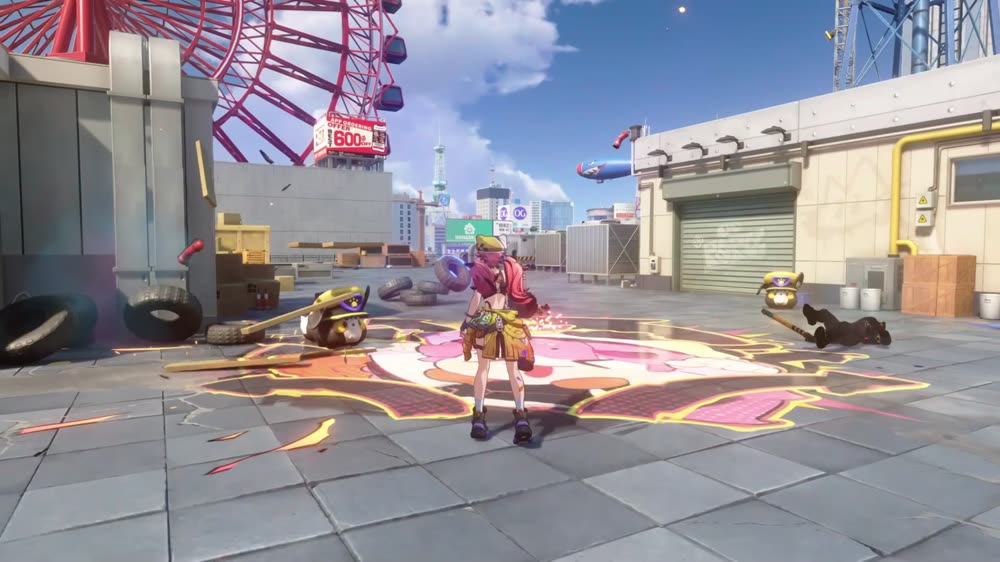

Ananta sort le 15 janvier 2027
La date de sortie mondiale a été annoncée lors de la Gamescom Opening Night Live. Une bande-annonce a accompagné l'annonce.
Lire la source
Accueil / Actualités
Annonces, dates et nouveautés. Chaque actu est reformulée et renvoie vers sa source.
Du plus récent au plus ancien. Chaque carte renvoie vers le site officiel ou un article de presse.
La date de sortie mondiale a été annoncée lors de la Gamescom Opening Night Live. Une bande-annonce a accompagné l'annonce.
Lire la sourceLa bande-annonce de la date de sortie présente Chongxiao. D'après la presse, la ville s'inspire notamment de Hangzhou.
Lire la sourceD'après l'annonce officielle, plus de 17 millions de joueurs se sont préinscrits dans plus de 110 pays et régions. Ce chiffre a été donné le jour de l'annonce de la date.
Lire la sourceLe projet est présenté à la Gamescom en août 2023 sous son nom de code, Project Mugen. Il devient Ananta fin 2024.
Lire la sourceLa bande-annonce doublée en français présente l'ambiance urbaine d'Ananta. Lance la lecture quand tu veux.
Vidéo : bande-annonce d'Ananta, propriété de ses ayants droit. Elle est affichée ici à titre de fan.
Une annonce, une théorie, une question ? Les fans francophones en parlent sur le Discord anantafr.